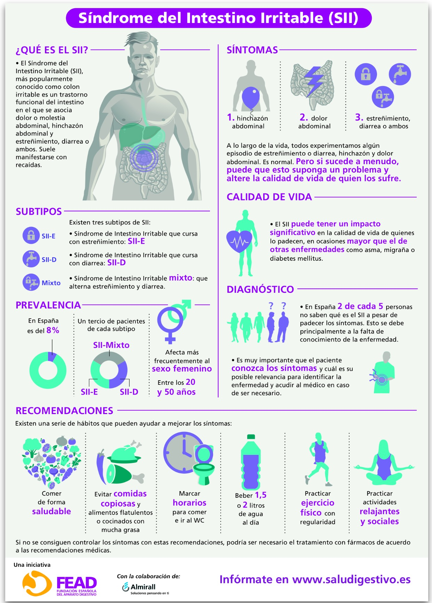

Colon Irritable
-Enfermedad digestiva que se caracteriza por Hinchazón, Dolor Abdominal y Estreñimiento
-Es más común entre los 20-40 años
-Los factores de riesgo son predisposición genética, Trastornos del Ánimo y factores infecciosos como alteraciones en el microbiota o haber sufrido Gastroenteritis
